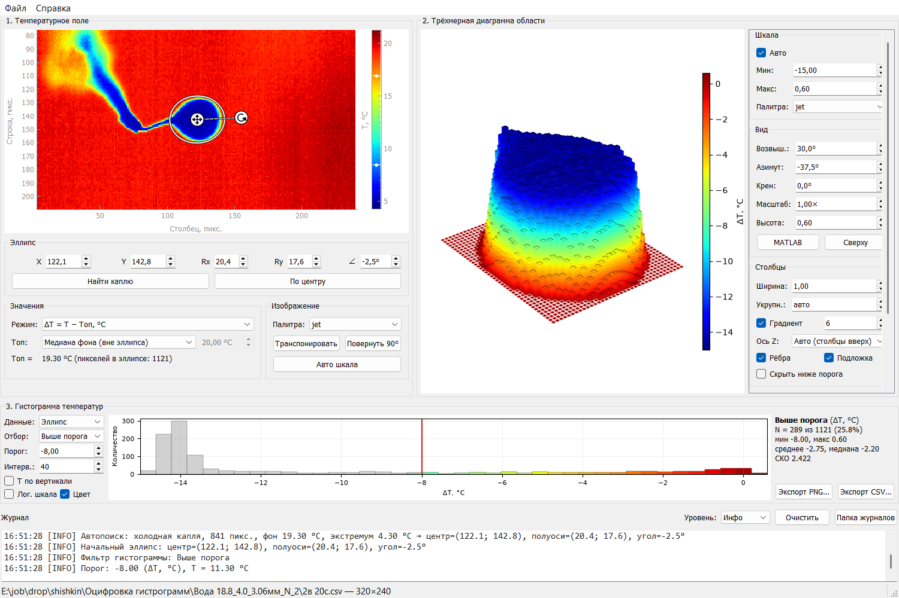
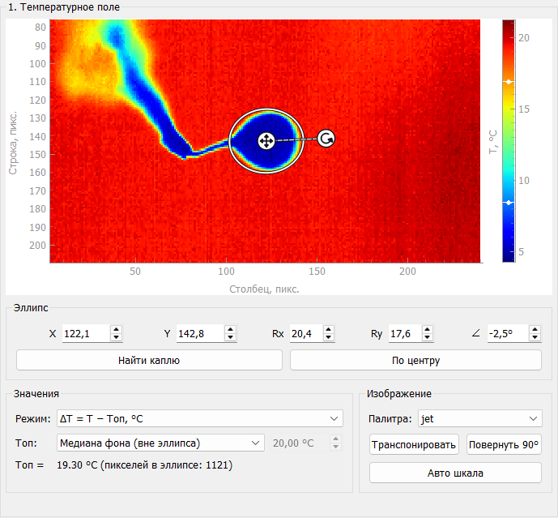
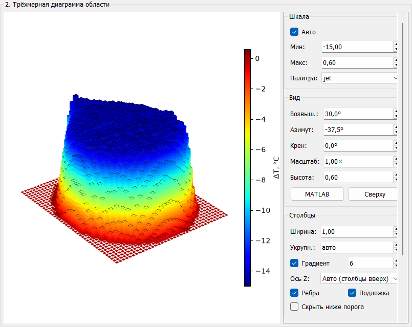
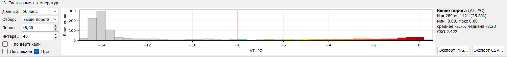
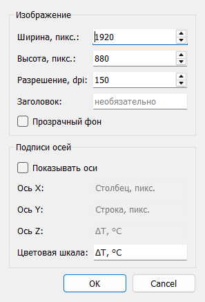
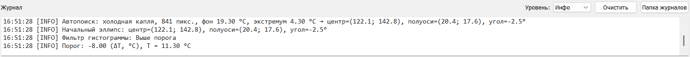

Руководство пользователя. Версия 1.0
ThermoDrop показывает температурное поле капли по кадру тепловизора. Каплю выделяют эллипсом, после чего программа строит объёмную (3D) диаграмму температур внутри эллипса и гистограмму распределения температур. Картинки и данные можно сохранить для отчёта.
Установщиков два, выберите один под ваш компьютер:
Как узнать разрядность. Нажмите правой кнопкой на «Компьютер» (или «Этот компьютер»), выберите «Свойства» и посмотрите строку «Тип системы». Если сомневаетесь, запустите x64: на 32-разрядной Windows он сам сообщит, что не подходит, и тогда возьмите x86.
Порядок установки:
Права администратора не нужны. Ничего дополнительно устанавливать не требуется: всё нужное уже внутри. Программа работает на Windows 7 SP1, 10 и 11.
Удаление: «Пуск» → «Панель управления» → «Программы и компоненты» → ThermoDrop → «Удалить».
Запустите программу значком ThermoDrop на Рабочем столе. Открыть файл можно тремя способами:
Программа читает таблицы температур, выгруженные из программы тепловизора, в форматах .csv, .txt и .dat. Подходит разделитель «;», табуляция или пробелы, а десятичный знак может быть и запятой, и точкой.
Файлы .gtsi и .SIT программа не открывает: это внутренние форматы тепловизора. Сначала сохраните кадр из программы тепловизора в CSV или TXT.
Сразу после открытия программа сама находит каплю и ставит на неё эллипс.

Главное окно программы
Окно разделено на четыре части:
Границы между частями можно двигать мышью, чтобы сделать нужное окно больше. Размеры и положение окна программа запоминает.

| Что сделать | Как |
|---|---|
| Передвинуть эллипс | тянуть за значок ✥ (крестик со стрелками) в центре |
| Повернуть эллипс | тянуть за значок ⟳ (круглая стрелка) на «ножке» сбоку |
| Изменить размер | тянуть за сам эллипс (за край или внутри): за правый край — шире, за верхний — выше |
| Изменить размер без искажения формы | то же, удерживая Shift |
| Задать точно | ввести числа в полях X, Y (центр), Rx, Ry (полуоси) и ∠ (угол) |
Кнопка Найти каплю снова ставит эллипс на каплю автоматически, кнопка По центру — в центр кадра.
Поле Режим:
Опорную температуру Tоп можно брать:
Найденное значение Tоп и число точек в эллипсе показаны строкой ниже.

Каждый столбик — одна точка кадра внутри эллипса. Его высота и цвет показывают температуру. Плоские клетки вокруг («подложка») — точки вне эллипса.
| Действие | Результат |
|---|---|
| Тянуть левой кнопкой | вращение |
| Колесо мыши или «щипок» двумя пальцами на тачпаде | приблизить / отдалить |
| Тянуть средней кнопкой (нажатым колесом) | сдвиг |
| Shift + колесо | верхняя граница цветовой шкалы |
| Ctrl + Shift + колесо | нижняя граница цветовой шкалы |

Гистограмма показывает, сколько точек имеют ту или иную температуру.
Справа показана статистика по отобранным точкам: количество и доля от всех, минимум, максимум, среднее, медиана и СКО (разброс).
Кнопка Экспорт изображения… в окне 2 (или Ctrl+E). Откроется окно параметров:

Затем выберите папку, имя файла и формат: PNG или JPG — обычная картинка, TIFF — для печати, SVG или PDF — векторные, их можно увеличивать без потери качества.
На картинку попадает ровно тот ракурс, цвета и шкала, что сейчас на экране.
Кнопки Экспорт PNG… (картинка со статистикой; тоже можно поменять подписи осей) и Экспорт CSV… (таблица интервалов и количеств для Excel).
Меню Файл:
Файлы CSV открываются в Excel двойным щелчком (разделитель «;», десятичная запятая).

Внизу окна программа записывает всё, что происходит: какой файл открыт, как менялся эллипс, какие настройки выбирались, что и куда сохранено, а также ошибки. Поле Уровень задаёт, насколько подробно показывать записи. Кнопка Папка журналов открывает папку с файлом журнала thermodrop.log.
Если программа повела себя странно, приложите к сообщению файл thermodrop.log — в нём видно, что происходило. Путь к папке: %LOCALAPPDATA%\ThermoDrop\logs.
| Ситуация | Что делать |
|---|---|
| «Формат файла не поддерживается» | Сохраните кадр из программы тепловизора в CSV/TXT. |
| Эллипс встал не на каплю | Нажмите «Найти каплю» или передвиньте эллипс вручную. |
| Кадр повёрнут | Кнопки «Повернуть 90°» / «Транспонировать». |
| 3D-диаграмма слишком мелкая или «тормозит» | Увеличьте «Укрупн.» (например, 2 или 3). |
| Столбики растут вниз | «Ось Z» → «Авто (столбцы вверх)». |
| Окно программы пропало за краем экрана | Перезапустите программу — окно вернётся на экран. |
| Установщик пишет, что не подходит для этой системы | Возьмите установщик x86. |
| Клавиши | Действие |
|---|---|
| Ctrl+O | Открыть файл |
| Ctrl+E | Сохранить картинку 3D-диаграммы |
| Ctrl+Shift+E | Сохранить картинку гистограммы |
| F1 | Это руководство |
| Ctrl+Q | Выход |